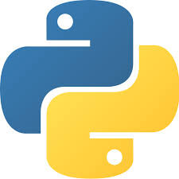
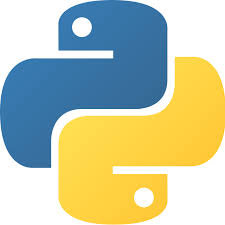

Trevor's Profolio

I am current enrolled at Florida International University as a computer science student who is aiming to have a career in Software Engineering. Originally, I was pursuing the career path of becoming a pharmacist but decided to have a career change and go back to school. My newfound interesting in programming and technology has been a great way to introduce me to a different and unique side of Stem. What I have learned from the classes I have taken so far has intrigued me to learned both the frontend and the backend part of programming. The projects I have worked on displays both my competency in either development track, but I am mostly interested in backend programming. What I noticed since coming into tech is an increase in minority programmers which gives me a good sign of how diverse this career path can be. I am willing to learn and build my skillsets in an environment that is not only engaging, but also challenging.
 
